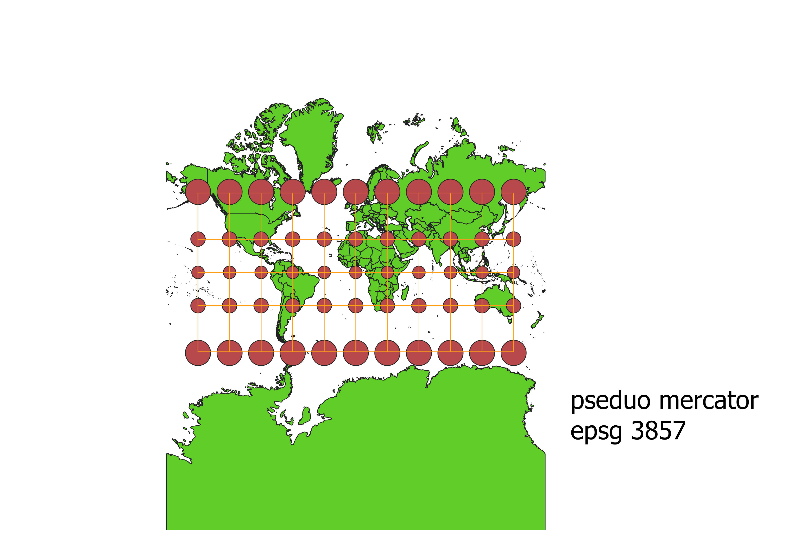
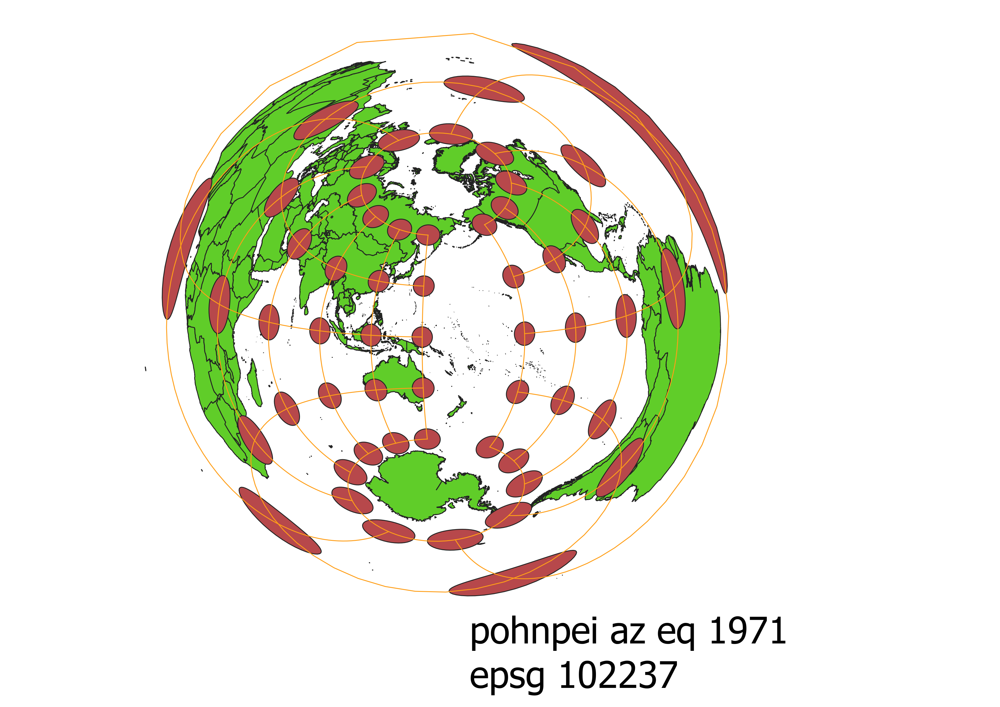

In this project I learned how to change projection in qgis
explain in your own words how you made different projections using QGIS
I went to the bottom right and added different projections to the map and saw how they affected teh globe differently.
WGS84 Projection
This projection stretches the globe horizontally, especially at the poles.

Aitoff Projection
This projection stretches the map vertically and makes the continents look longer than they are, especially north America

pseudo mercador Projection
This projection makes the arctic look stretched out and shriks africa and south america

Pohnpei az eq 1971
This projection twists the earth around, making the poles closer together and distorting everything around it.

North Pole azimuthul equidistant
This projection increases the size of the poles and shrinks the rest of the globe vertically and horizontally.

world equidistant conic
This projection stretched horizontally around a globe shape and distorted the artics and stretched from the bottom up.

world cylindricaqual area
This prjection stretches north america and the poleshorizontally and squishes them vertically while keeping the middle at the correct shape, this distorts size comparisons.

sphere winkel
This projection shows almost normal shaping, the middle around africa and south america is horizontally squished and the closer to the poles you get, the more it is vertically stretched..

world bonne
This projection shows a vertical stretch, it keeps the shapeof most of the globe until you get to the poles in which case they are vertically stretched..

Data used for this project